Clase 9 Regularización
library(tidyverse)9.1 Repaso
La tasa de error se define como la proporción de casos para los cuáles la predicción de \(y_i\) a partir de la probabilidad estimada \[ \pi_i=p_1(x_i)=\mbox{logit}^{-1}(X_i\beta) \] es incorrecta.
Para hacer la predicción para cada \(y_i\) es necesario definir un punto de corte, en principio se utiliza el \(0.5\) de la forma que la predicción de \(y_i\), denotada por \(\hat{y}_i\), es \[ \hat{y}_{i} = \left\{ \begin{array}{cl} 1 & \text{si }\;\mbox{logit}^{-1}(X_i\beta) > 0.5,\\ 0 & \text{en otro caso.} \end{array}\right. \]
Definimos la devianza como \[ D(\beta) = -2\sum_{i=1}^N \log(p_{y^{(i)}} (x^{(i)})), \] y utilizamos descenso en gradiente paera minimizar \(D(\beta\) con respecto a \(\beta\).
Es fácil ver que este método de estimación de los coeficientes (minimizando la devianza) es el método de máxima verosimilitud. La verosimilitud está dada por:
\[ L(\beta) =\prod_{i=1}^N p_{y^{(i)}} (x^{(i)}), \] y la log verosimilitud es \[ l(\beta) =\sum_{i=1}^N \log(p_{y^{(i)}} (x^{(i)})). \]
Usamos el factor \(2\) en la medida de devianza para usarla más fácilmente en pruebas de hipótesis relacionadas con comparaciones entre modelos.Después de estudiar la tasa de error y la tasa de error del modelo nulo, presentamos técnicas adicionales para evaluar el desempeño de un modelo.
Veamos primero las ventajas y desventajas de estas dos medidas:
| Ventajas | Desventajas | |
|---|---|---|
| Devianza | - es una buena medida para ajustar y evaluar el desempeño de un modelo - permite comparar modelos | - es una medida dificil de interpretar en cuanto a los errores que podemos esperar del modelo |
| Tasa de error | - puede interpretarse con facilidad | - no puede representar errores de clasificación que son cualitativamente diferentes |
9.2 Otras medidas de clasificación
¿Por qué son importantes otras medidas de clasificación?
Diagnosticar a alguien con una enfermedad cuando no la tiene tiene consecuencias distintas a diagnosticar como libre de enfermedad a alguien que la tiene.
Estas consecuencias dependen de cómo son los tratamientos y de qué tan peligrosa es la enfermedad.
Cuando usamos un buscador como Google, es cualitativamente diferente que el buscador omita resultados relevantes a que nos presente resultados irrelevantes.
¿Otros ejemplos?
En general, los costos de los distintos errores son distintos, y en muchos problemas quiséramos entenderlos y controlarlos individualmente. Aunque en teoría podríamos asignar costos a los errores y definir una función de pérdida apropiada, en la práctica esto muchas veces no es tan fácil o deseable. Una función de pérdida se utiliza para la estimación de parámetros, y es tal que le asocia a cada observación un valor que representa un costo asociado a la clasificación, generalmente es la diferencia entre los valores estimados y los observados para cada observación en los datos.
Podemos, sin embargo, reportar el tipo de errores que ocurren:
Matriz de confusión
La matriz de confusión \(C\) está dada por
\[ C_{i,j}=\mbox{Nú}\;\,\mbox{mero de casos de la clase verdadera j que son clasificados como clase i} \]Ejemplo
En un ejemplo de tres clases, podríamos obtener la matriz de confusión:
| A | B | C | |
|---|---|---|---|
| A.pred | 50 | 2 | 0 |
| B.pred | 20 | 105 | 10 |
| C.pred | 20 | 10 | 30 |
Esto quiere decir que de 90 casos de clase \(A\), sólo clasificamos a 50 en la clase correcta, de 117 casos de clase \(B\), acertamos en 105, etcétera.
Podemos ver esta tabla de distintas formas, por ejemplo, usando porcentajes por columna, nos dice cómo se distribuyen los casos de cada clase:
knitr::kable(round(prop.table(tabla_1, 2),2))| A | B | C | |
|---|---|---|---|
| A.pred | 0.56 | 0.02 | 0.00 |
| B.pred | 0.22 | 0.90 | 0.25 |
| C.pred | 0.22 | 0.09 | 0.75 |
Mientras que una tabla de porcentajes por renglón nos muestra qué pasa cada vez que hacemos una predicción dada:
knitr::kable(round(prop.table(tabla_1, 1),2))| A | B | C | |
|---|---|---|---|
| A.pred | 0.96 | 0.04 | 0.00 |
| B.pred | 0.15 | 0.78 | 0.07 |
| C.pred | 0.33 | 0.17 | 0.50 |
Ahora pensemos cómo podría sernos de utilidad esta tabla. Pensemos qué implicaciones tendría esta tabla de confusión, si la clasificación fuera respecto a:
la severidad de emergencias en un hospital, donde A=requiere atención inmediata B=urgente C=puede posponerse, entonces qué implicación tendría cada uno de los números de la tabla.
tipos de cliente de un negocio, por ejemplo, A = cliente de gasto potencial alto, B=cliente medio, C=abandonador. Imagínate que tiene un costo intentar conservar a un abandonador, y hay una inversión alta para tratar a los clientes A.
La tasa de incorrectos es la misma en los dos ejemplos, pero la adecuación del modelo es muy diferente.
9.3 Análisis de error en clasificación binaria
Cuando la variable a predecir es binaria (dos clases), podemos etiquetar una clase como positivo y otra como negativo. En el fondo no importa cómo catalogemos cada clase, pero para problemas particulares una asignación puede ser más natural. Por ejemplo, en diagnóstico de enfermedades, positivo=tiene la enfermedad, en análisis de crédito, positivo=cae en impago, en sistemas de recomendacion, positivo = le gusta el producto X, en recuperación de textos, positivo=el documento es relevante a la búsqueda, etc.
Hay dos tipos de errores en un modelo logístico binario (positivo - negativo):
Falsos positivos (fp): clasificar como positivo a un caso negativo.
Falsos negativos (fn): clasificar como negativo a un caso positivo.
La matriz de confusion es entonces
| positivos | negativos | total | |
|---|---|---|---|
| predicción posiriva | pv | fp | pred.pos |
| predicción negativa | fn | nv | pred.neg |
| total | pos | neg |
Nótese que un modelo bueno, en general, es uno que tiene la mayor parte de los casos en la diagonal de la matriz de confusión.
Podemos estudiar nuestro modelo en términos de las proporciones de casos que caen en cada celda, que dependen del desempeño del modelo en cuanto a casos positivos y negativos. La nomenclatura es confusa, pues en distintas áreas se usan distintos nombres para estas proporciones:
- Tasa de falsos positivos
\[ \frac{\mbox{fp}}{\mbox{fp}+\mbox{nv}}=\frac{\mbox{fp}}{\mbox{neg}} \]
- Tasa de falsos negativos
\[ \frac{\mbox{fn}}{\mbox{pv}+\mbox{fn}}=\frac{\mbox{fn}}{\mbox{pos}} \]
- Especificidad
\[ \frac{\mbox{nv}}{\mbox{fp}+\mbox{nv}}=\frac{\mbox{nv}}{\mbox{neg}} \]
- Sensibilidad
\[ \frac{\mbox{pv}}{\mbox{pv}+\mbox{fn}}=\frac{\mbox{pv}}{\mbox{pos}} \]
Y también otras que tienen como base las predicciones:
- Valor predictivo positivo o Precisión
\[ \frac{\mbox{vp}}{\mbox{vp}+\mbox{fp}}=\frac{\mbox{vp}}{\mbox{pred.pos}} \]
- Valor predictivo negativo
\[ \frac{\mbox{vn}}{\mbox{fn}+\mbox{vn}}=\frac{\mbox{vn}}{\mbox{pred.neg}} \]
Dependiendo de el tema y el objetivo hay medidas más naturales que otras:
En pruebas clínicas, se usa típicamente sensibilidad y especificidad (proporción de positivos que detectamos y proporción de negativos que descartamos).
En búsqueda y recuperación de documentos (positivo=el documento es relevante, negativo=el documento no es relevante), se usa precisión y sensibilidad (precisión=de los documentos que entregamos (predicción positiva), cuáles son realmente positivos/relevantes, y sensibilidad=de todos los documentos relevantes, cuáles devolvemos). Aquí la tasa de falsos positivos (de todos los negativos, cuáles se predicen positivos), por ejemplo, no es de ayuda pues generalmente son bajas y no discriminan el desempeño de los modelos. La razón es que típicamente hay una gran cantidad de negativos, y se devuelven relativamente pocos documentos, de forma que la tasa de falsos positivos generalmente es muy pequeña.
Ejercicio
¿Qué relaciones hay entre las cantidades mostradas arriba?
Escribe la tasa de clasificación incorrecta en términos de especificidad y sensibilidad.
También intenta escribir valor predictivo positivo y valor predictivo negativo en términos de sensibilidad y especificidad.
Ejercicio
Consideremos los datos Pima.tr del paqute MASS:
diabetes <- MASS::Pima.tr
diabetes %>% sample_n(10) %>% knitr::kable()| npreg | glu | bp | skin | bmi | ped | age | type | |
|---|---|---|---|---|---|---|---|---|
| 17 | 1 | 109 | 60 | 8 | 25.4 | 0.947 | 21 | No |
| 167 | 0 | 151 | 90 | 46 | 42.1 | 0.371 | 21 | Yes |
| 119 | 1 | 136 | 74 | 50 | 37.4 | 0.399 | 24 | No |
| 31 | 1 | 79 | 60 | 42 | 43.5 | 0.678 | 23 | No |
| 2 | 7 | 195 | 70 | 33 | 25.1 | 0.163 | 55 | Yes |
| 91 | 1 | 79 | 75 | 30 | 32.0 | 0.396 | 22 | No |
| 97 | 4 | 110 | 76 | 20 | 28.4 | 0.118 | 27 | No |
| 56 | 4 | 127 | 88 | 11 | 34.5 | 0.598 | 28 | No |
| 141 | 1 | 167 | 74 | 17 | 23.4 | 0.447 | 33 | Yes |
| 148 | 0 | 177 | 60 | 29 | 34.6 | 1.072 | 21 | Yes |
Calcula la matriz de confusión para el modelo logístico de diabetes en términos de glucosa. Calcula especificidad, sensibilidad, y precisión.
mod_1 <- glm(type ~ glu, data = diabetes, family = 'binomial')
preds <- mod_1$fitted.values9.3.1 Punto de corte para un clasificador binario
¿Qué sucede cuando el perfil de sensibilidad y especificidad de unmodelo logístivco no es apropiado para nuestros fines?
Recordemos que una vez que hemos estimado con \(\hat{p}_1(x)\), nuestra regla de clasificación es:
Predecir positivo si \(\hat{p}_1(x) > 0.5\),
Predecir negativo si \(\hat{p}_1(x) \leq 0.5.\)
Esto sugiere una regla alternativa:
Para \(0 < d < 1\), podemos utilizar nuestras estimaciones \(\hat{p}_1(x)\) para construir un modelo alternativo poniendo:
Predecir positivo si \(\hat{p}_1(x) > d\),
Predecir negativo si \(\hat{p}_1(x) \leq d\).
Distintos valores de \(d\) dan distintos perfiles de sensibilidad-especificidad para una misma estimación de las probabilidades condicionales de clase:
Para minimizar la tasa de incorrectos conviene poner \(d = 0.5\). Sin embargo, en ocasiones no es esto lo que se busca de un modelo de clasificación binaria.
Cuando incrementamos d, quiere decir que exigimos estar más seguros de que un caso es positivo para clasificarlo como positivo. Eso quiere decir que la especifidad va a ser más grande (entre los negativos verdaderos va a haber menos falsos positivos). Sin embargo, la sensibilidad va a ser más chica pues captamos menos de los verdaderos positivos.
Ejemplo
Por ejemplo, si en el caso de diabetes incrementamos el punto de corte a \(0.7\):
table(preds > 0.7, diabetes$type)
#>
#> No Yes
#> FALSE 128 52
#> TRUE 4 16
tab <- prop.table(table(preds > 0.7, diabetes$type),2)
tab
#>
#> No Yes
#> FALSE 0.9697 0.7647
#> TRUE 0.0303 0.2353La especificidad ahora es 0.97, muy alta (descartamos muy bien casos negativos), pero la sensibilidad se deteriora a 0.24.
- Cuando hacemos más chica \(d\), entonces exigimos estar más seguros de que un caso es negativo para clasificarlo como negativo. Esto aumenta la sensibilidad, pero la especificidad baja.
Por ejemplo, si en el caso de diabetes ponemos el punto de corte en 0.3:
table(preds > 0.3, diabetes$type)
#>
#> No Yes
#> FALSE 94 15
#> TRUE 38 53
tab <- prop.table(table(preds > 0.3, diabetes$type),2)
tab
#>
#> No Yes
#> FALSE 0.712 0.221
#> TRUE 0.288 0.7799.4 Curvas ROC
9.4.1 Espacio ROC
Podemos visualizar el desempeño de cada uno de estos modelos con punto de corte mapeándolos a las coordenadas de tasa de falsos positivos (1-especificidad) y sensibilidad:
clasif_1 <- data.frame(
corte = c('0.3','0.5','0.7','perfecto','azar'),
tasa_falsos_pos=c(0.24,0.08,0.02,0,0.7),
sensibilidad =c(0.66, 0.46,0.19,1,0.7))
ggplot(clasif_1, aes(x=tasa_falsos_pos, y=sensibilidad,
label=corte)) + geom_point() +
geom_abline(intercept=0, slope=1) +
xlim(c(0,1)) +ylim(c(0,1)) + geom_text(hjust=-0.3, col='red')+
xlab('1-especificidad (tasa falsos pos)')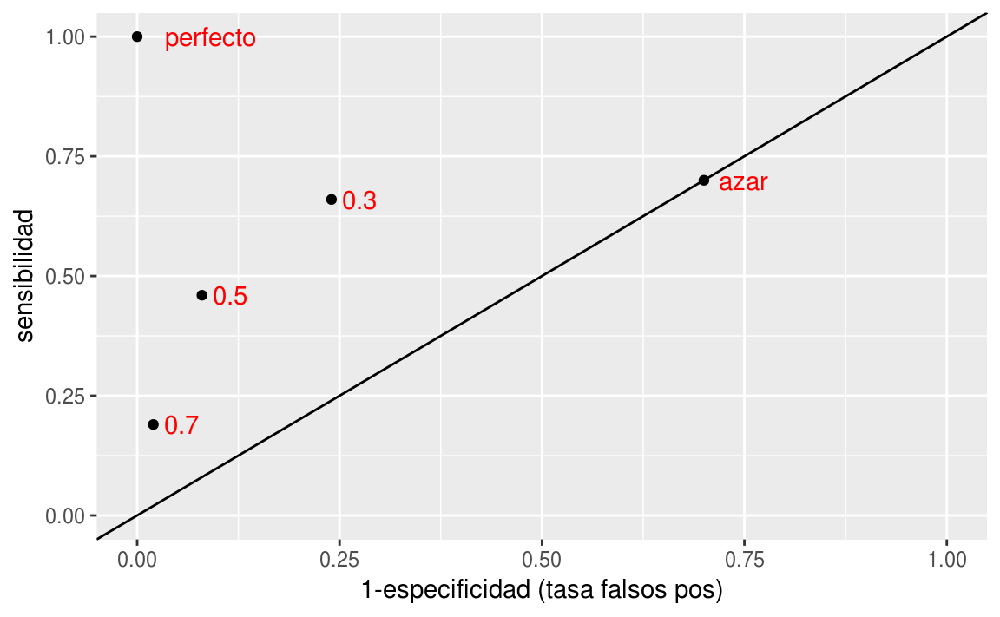
Nótese que agregamos otros dos modelos de clasificación, uno perfecto, que tiene tasa de falsos positivos igual a 0 y sensibilidad igual a 1.
En esta gráfica, un modelo que esté más arriba a la izquierda domina a otro que esté más abajo a la derecha porque tiene mejor especificidad y mejor sensibilidad. Entre los puntos de corte \(0.3\), \(0.5\) y \(0.7\) de la gráfica, no hay ninguno que domine a otro.
Todos los modelos en la diagonal son equivalentes a clasificar las observaciones al azar. ¿Por qué? La razón es que si cada vez que vemos un nuevo caso lo clasificamos como positivo con probabilidad \(p\) fija y arbitraria. Esto implica que cuando veamos un caso positivo, la probabilidad de ‘atinarle’ es de \(p\) (sensibilidad), y cuando vemos un negativo, la probabilidad de equivocarnos también es de \(p\) (tasa de falsos positivos). De modo que este modelo al azar está en la diagonal.
¿Qué podemos decir acerca de los modelos que caen por debajo de la diagonal? Estos son particularmente malos, pues existen los modelos al azar que tienen mayor sensibilidad y especificidad. Sin embargo, se puede construir un mejor modelo volteando las predicciones, lo que cambia sensibilidad por tasa de falsos positivos.
- ¿Cuál de los tres modelos es el mejor? En términos de la tasa de incorrectos, el de corte 0.5. Sin embargo, para otros propósitos puede ser razonable escoger alguno de los otros.
En lugar de examinar cada punto de corte por separado, podemos hacer el análisis de todos los posibles puntos de corte mediante la curva ROC (receiver operating characteristic, de ingeniería).
Ejemplo
Recordemos los datos de diabéticos. Modelamos el tipo de diabetes tomando como predictor el nivel de glucosa. Con el paquete tabplot podemos obtener la gráfica de abajo.
library(tabplot)
mod_1 <- glm(type ~ glu, diabetes, family = 'binomial')
diabetes$probs_1 <- predict(mod_1, newdata = diabetes, type = "response")
head(arrange(diabetes, desc(probs_1)))
#> npreg glu bp skin bmi ped age type probs_1
#> 1 1 199 76 43 42.9 1.394 22 Yes 0.882
#> 2 0 198 66 32 41.3 0.502 28 Yes 0.878
#> 3 2 197 70 99 34.7 0.575 62 Yes 0.874
#> 4 7 195 70 33 25.1 0.163 55 Yes 0.866
#> 5 7 194 68 28 35.9 0.745 41 Yes 0.861
#> 6 1 193 50 16 25.9 0.655 24 No 0.857
tableplot(diabetes, sortCol = probs_1)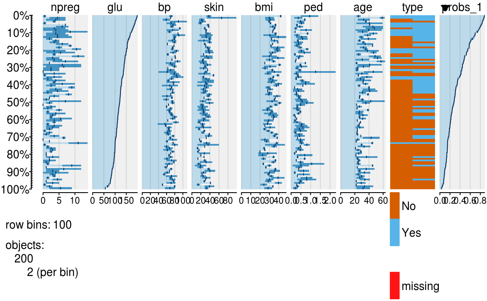
La columna de probabilidad de la derecha nos dice en qué valores podemos cortar para obtener distintos modelos. Nótese que si cortamos más arriba, se nos escapan más positivos verdaderos que clasificamos como negativos, pero clasificamos a más negativos verdaderos como negativos. Lo opuesto ocurre cuando cortamos más abajo.
Vamos a graficar todos los pares (1-especificidad, sensibilidad) para cada punto de corte \(d\) de estas probabilidades.
library(ROCR)
pred_rocr <- prediction(diabetes$probs_1, diabetes$type)
perf <- performance(pred_rocr, measure = "sens", x.measure = "fpr")
graf_roc_1 <- data_frame(tfp = perf@x.values[[1]], sens = perf@y.values[[1]],
d = perf@alpha.values[[1]])
ggplot(graf_roc_1, aes(x = tfp, y = sens, colour=d)) + geom_point() +
xlab('1-especificidad') + ylab('Sensibilidad') 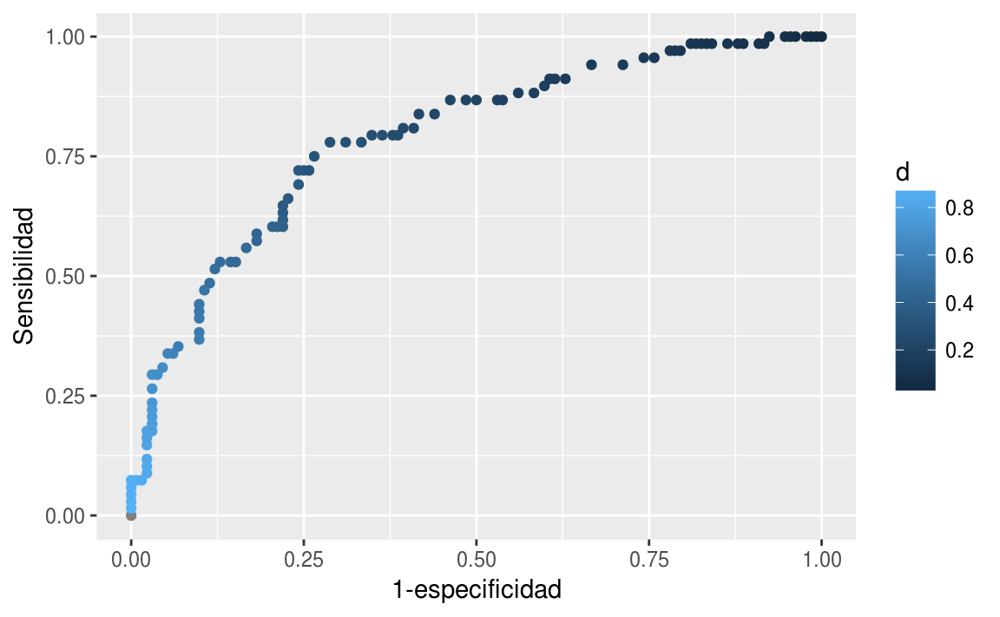
En esta gráfica podemos ver todos los modelos posibles basados en las probabilidades de clase. Dejamos para más tarde la selección del punto de corte.
También podemos definir una medida resumen del desempeño de un modelo según esta curva:
auc_1 <- performance(pred_rocr, measure = 'auc')@y.values
auc_1
#> [[1]]
#> [1] 0.789También es útil para comparar modelos. Consideremos el modelo de los datos de diabetes que incluyen todas las variables:
mod_2 <- glm(type ~ ., diabetes, family = 'binomial')
diabetes$probs_2 <- predict(mod_2, newdata = diabetes, type = "response")
head(arrange(diabetes, desc(probs_2)))
#> npreg glu bp skin bmi ped age type probs_1 probs_2
#> 1 0 137 40 35 43.1 2.288 33 Yes 0.419 0.976
#> 2 1 199 76 43 42.9 1.394 22 Yes 0.882 0.972
#> 3 7 194 68 28 35.9 0.745 41 Yes 0.861 0.948
#> 4 2 197 70 99 34.7 0.575 62 Yes 0.874 0.944
#> 5 10 148 84 48 37.6 1.001 51 Yes 0.522 0.932
#> 6 8 181 68 36 30.1 0.615 60 Yes 0.792 0.918
tableplot(diabetes, sortCol = probs_2)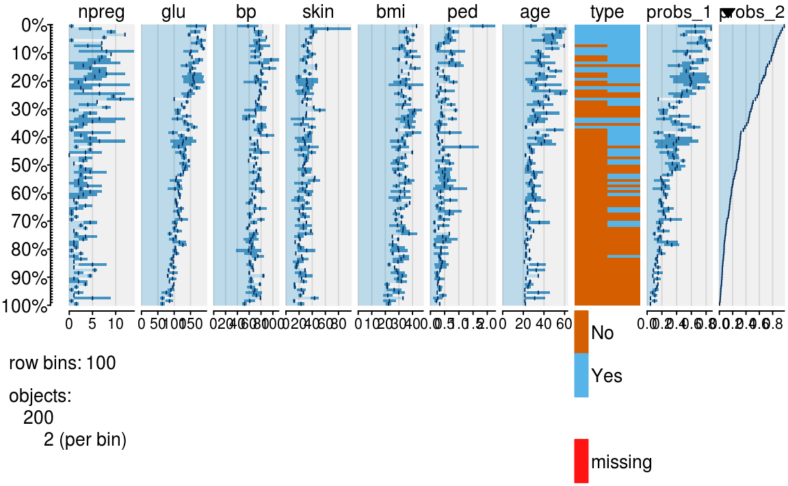
Y graficamos juntas:
library(ROCR)
pred_rocr <- prediction(diabetes$probs_2, diabetes$type)
perf <- performance(pred_rocr, measure = "sens", x.measure = "fpr")
auc_2 <- performance(pred_rocr, measure = "auc")@y.values
graf_roc_2 <- data_frame(tfp = perf@x.values[[1]], sens = perf@y.values[[1]],
d = perf@alpha.values[[1]])
graf_roc_2$modelo <- 'Todas las variables'
graf_roc_1$modelo <- 'Solo glucosa'
graf_roc <- bind_rows(graf_roc_1, graf_roc_2)
ggplot(graf_roc, aes(x = tfp, y = sens, colour = modelo)) + geom_point() +
xlab('1-especificidad') + ylab('Sensibilidad') 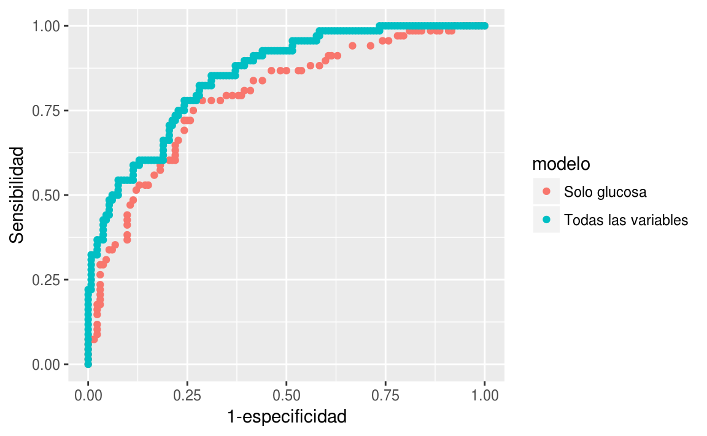
Comparación auc:
auc_1
#> [[1]]
#> [1] 0.789
auc_2
#> [[1]]
#> [1] 0.851En este ejemplo, vemos que casi no importa que perfil de especificidad y sensibilidad busquemos: el modelo que usa todas las variables domina casi siempre al modelo que sólo utiliza las variables de glucosa.
La razón es que para cualquier punto de corte (con sensibilidad menor a 0.4) en el modelo de una variable, existe otro modelo en la curva roja (todas las variable), que domina al primero.
9.5 Regularización
En primer lugar, supondremos que tenemos un problema con \(n=400\) y \(p=100\), y tomamos como modelo para los datos (sin ordenada al origen):
\[ p_1(x)=h\left(\sum_{j=1}^{100} \beta_j x_j\right ), \]
donde \(h\) es la función logística.
Nótese que este es el verdadero modelo para los datos. Para simular datos, primero generamos las betas fijas, y después, utilizando estas betas, generamos 400 observaciones.
Generamos las betas:
h <- function(x){ 1 / (1 + exp(-x))}
set.seed(2805)
beta <- rnorm(100,0,0.1)
names(beta) <- paste0('V', 1:length(beta))
head(beta)
#> V1 V2 V3 V4 V5 V6
#> -0.11988 0.03463 -0.08182 0.01492 0.04016 0.00204Con esta función simulamos 400 observaciones.
sim_datos <- function(n, m, beta){
p <- length(beta)
#n = observaciones, p=num variables
mat <- matrix(rnorm(n*p, 0, 0.5), n, p) + rnorm(n)
prob <- h(mat %*% beta)
y <- rbinom(n, 1, prob)
dat <- as.data.frame(mat)
dat$y <- y
dat
}
set.seed(9921)
datos <- sim_datos(n = 400, beta = beta)Y ahora ajustamos el modelo de regresión logística:
mod_1 <- glm(y ~ -1 + ., datos, family = 'binomial')¿Qué tan buenas fueron nuestras estimaciones?
qplot(beta, mod_1$coefficients) +
xlab('Coeficientes') +
ylab('Coeficientes estimados') +
geom_abline(intercept=0, slope =1) +
xlim(c(-1.5,1.5))+ ylim(c(-1.5,1.5))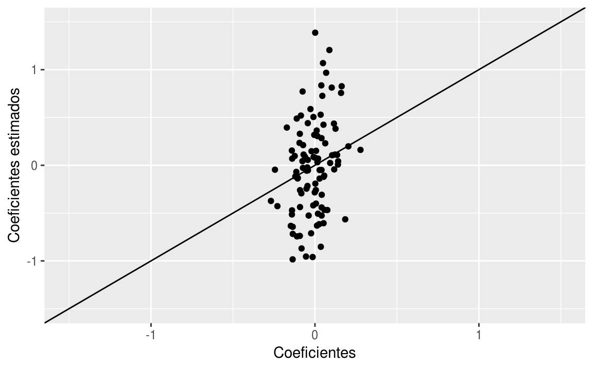
Y notamos que las estimaciones no son muy buenas. Podemos hacer otra simulación para confirmar que el problema es que las estimaciones son muy variables.
Con otra muestra, vemos que las estimaciones tienen varianza alta.
datos_2 <- sim_datos(n = 400, beta = beta)
mod_2 <- glm(y ~ -1 + ., datos_2, family = 'binomial')
qplot(mod_1$coefficients, mod_2$coefficients) + xlab('Coeficientes mod 1') +
ylab('Coeficientes mod 2') +
geom_abline(intercept=0, slope =1) +
xlim(c(-1.5,1.5))+ ylim(c(-1.5,1.5))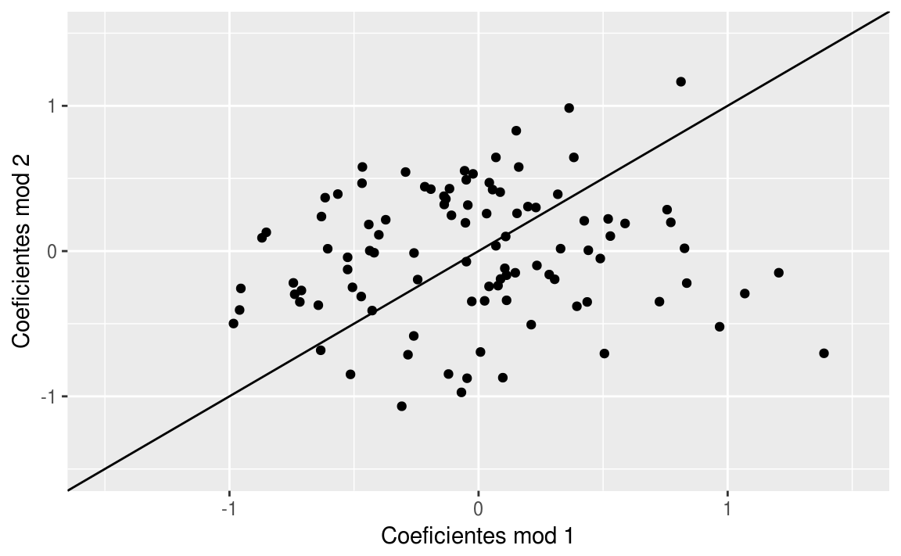
Si repetimos varias veces:
dat_sim <- map_df(.x = 1:50, .f = function(i, beta){
salida <- sim_datos(n=400, beta=beta)
mod <- glm(y ~ -1 + ., salida, family = "binomial")
tibble(rep = i, vars = names(coef(mod)), coefs = coef(mod))
}, beta = beta)
head(dat_sim)
#> # A tibble: 6 x 3
#> rep vars coefs
#> <int> <chr> <dbl>
#> 1 1 V1 -0.0789
#> 2 1 V2 0.142
#> 3 1 V3 0.109
#> 4 1 V4 0.140
#> 5 1 V5 0.926
#> 6 1 V6 0.120Vemos que hay mucha variabilidad en la estimación de los coeficientes (en rojo están los verdaderos):
dat_sim <- dat_sim %>% mutate(vars = reorder(vars, coefs, mean))
ggplot(dat_sim, aes(x=vars, y=coefs)) + geom_boxplot() +
geom_line(data=data_frame(coefs=beta, vars=names(beta)),
aes(y=beta, group=1), col='red',size=1.1) + coord_flip()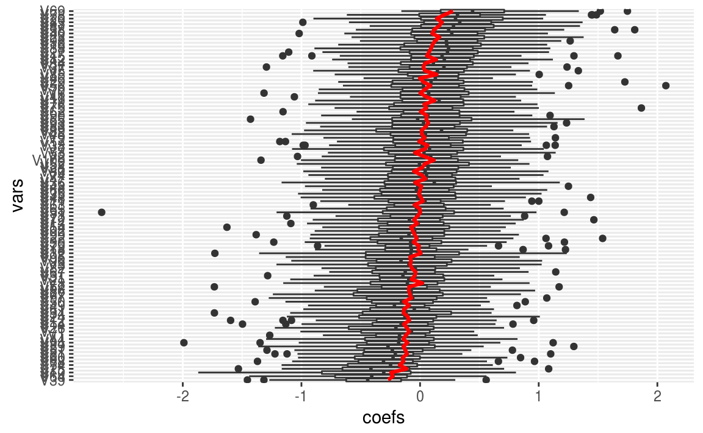
En la práctica, nosotros tenemos una sola muestra de entrenamiento. Así que, con una muestra de tamaño \(n=500\) como en este ejemplo, obtendremos típicamente resultados no muy buenos. Estos coeficientes ruidosos afectan nuestras predicciones.
Vemos ahora lo que pasa con nuestra \(\hat{p}_1(x)\) estimadas, comparándolas con \(p_1(x)\), para la primera simulación:
x <- datos %>% select(-y) %>% as.matrix
ps <- data_frame(prob_hat_1 = h(mod_1$fitted.values),
prob_1 = as.numeric(h(x%*% beta)),
clase = datos$y)
head(ps)
#> # A tibble: 6 x 3
#> prob_hat_1 prob_1 clase
#> <dbl> <dbl> <int>
#> 1 0.530 0.372 0
#> 2 0.524 0.170 0
#> 3 0.545 0.349 0
#> 4 0.534 0.380 0
#> 5 0.653 0.432 0
#> 6 0.727 0.913 1ggplot(ps, aes(x=prob_1, y=prob_hat_1, colour=factor(clase))) + geom_point()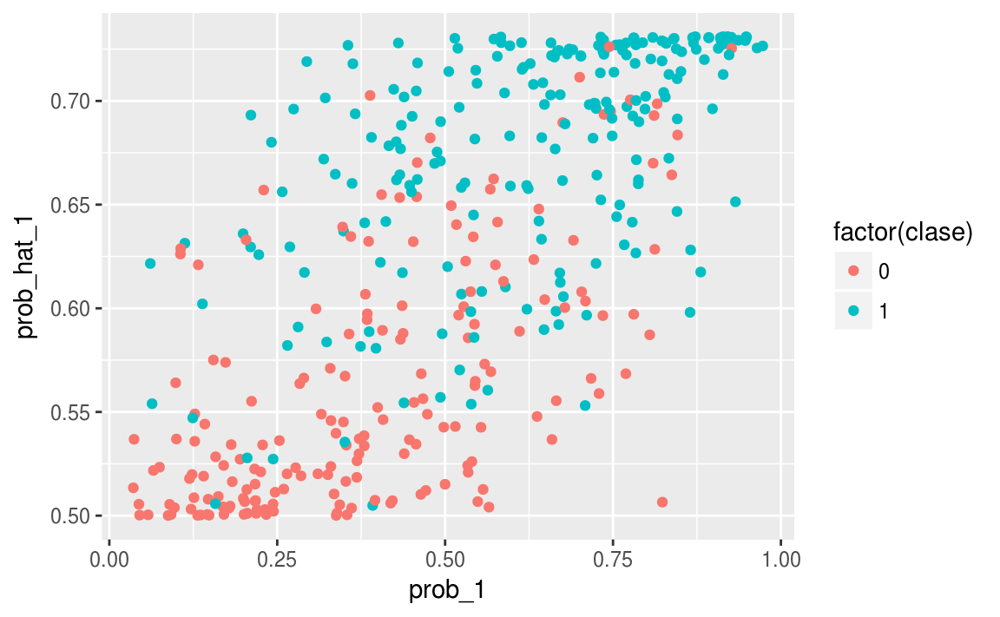
Si la estimación fuera perfecta, esta gráfica sería una diagonal. Vemos entonces que cometemos errores grandes. El problema no es que nuestro modelo no sea apropiado (logístico), pues ése es el modelo real. El problema es la variabilidad en la estimación de los coeficientes que notamos arriba.
9.5.1 Reduciendo varianza de los coeficientes
Como el problema es la varianza, podemos atacar este problema poniendo restricciones a los coeficientes, de manera que caigan en rangos más aceptables. Una manera de hacer esto es sustituir el problema de minimización de regresión logística, que es minimizar la devianza:
\[ \min_{\beta} D(\beta) \]
con un problema penalizado
\[ \min_{\beta} D(\beta) + \lambda\sum_{i=1}^p \beta_j^2 \]
escogiendo un valor apropiado de \(\lambda\). También es posible poner restricciones sobre el tamaño de \(\sum_{i=1}^p \beta_j^2\), lo cual es equivalente al problema de penalización.
En este caso obtenemos (veremos más del paquete glmnet):
library(glmnet)
mod_restringido <- glmnet(x = x, y = datos$y,
alpha = 0,
family='binomial', intercept = F,
lambda = 0.1)
beta_penalizado <- coef(mod_restringido)[-1] # quitar interceptY podemos ver que el tamaño de los coeficientes se redujo considerablemente:
sum(beta_penalizado^2)
#> [1] 0.465
sum(coef(mod_1)^2)
#> [1] 24.5Los nuevos coeficientes estimados:
qplot(beta, beta_penalizado) +
xlab('Coeficientes') +
ylab('Coeficientes estimados') +
geom_abline(xintercept=0, slope =1) +
xlim(c(-0.5,0.5))+ ylim(c(-0.5,0.5))
#> Warning: Ignoring unknown parameters: xintercept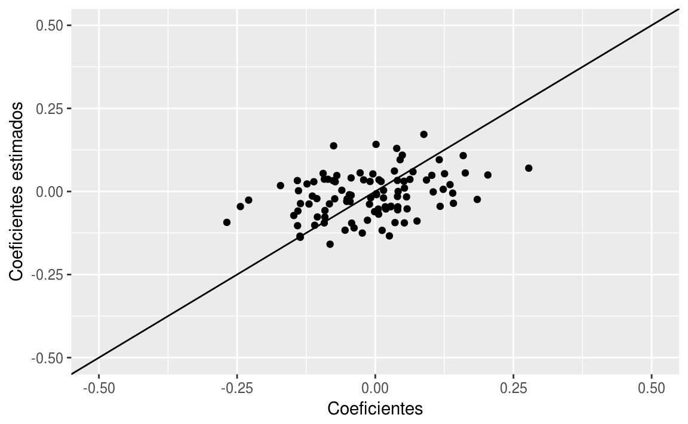
ps$prob_hat_pen <- h(x %*% as.numeric(beta_penalizado))ggplot(ps, aes(x=prob_1, y=prob_hat_pen, colour=factor(clase))) + geom_point()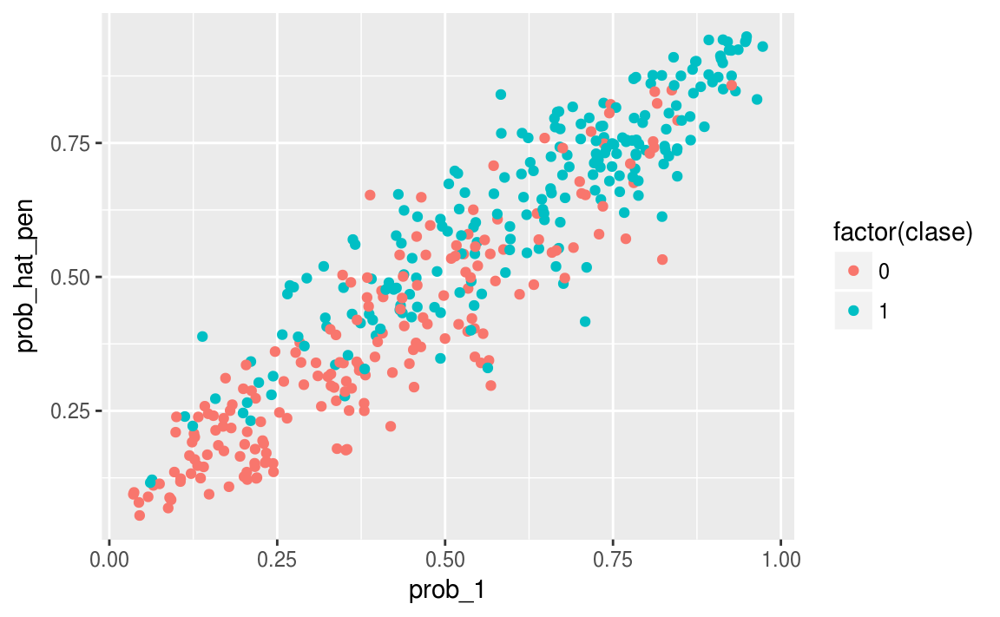
tab <- table(ps$prob_hat_pen > 0.5, ps$clase)
prop.table(tab, margin=2)
#>
#> 0 1
#> FALSE 0.731 0.262
#> TRUE 0.269 0.738Comparamos con la tabla de confusión sin penalizar:
tab <- table(ps$prob_hat_1 > 0.5, ps$clase)
tab
#>
#> 0 1
#> TRUE 186 2149.6 Regularización Ridge
Arriba vimos un ejemplo de regresión penalizada tipo Ridge. Recordemos que en regresión logística buscamos minimizar, \[ D(\beta)=-2\sum_{i=1}^n y_i \log\left(h(x_i^\prime \beta)\right) + (1-y_i) \log\left(1-h(x_i^\prime \beta)\right). \]
Observaciones
La idea de regresión penalizada consiste en estabilizar la estimación de los coeficientes, especialmente en casos donde tenemos muchas variables en relación al número de observaciones. La penalización no permite que varíen tan fuertemente los coeficientes.
Cuando \(\lambda\) es mas grande, los coeficientes se encogen más fuertemente hacia cero con respecto al problema no regularizado. En este caso, estamos reduciendo la varianza pero potencialmente incrementando el sesgo.
Cuando \(\lambda\) es mas chico, los coeficientes se encogen menos fuertemente hacia cero, y quedan más cercanos a los coeficientes de mínimos cuadrados/máxima verosimilitud. En este caso, estamos reduciendo el sesgo pero incrementando la varianza.
Nótese que no penalizamos \(\beta_0\). Es posible hacerlo, pero típicamente no lo hacemos. Recordemos que en regresión logística, la probabilidad ajustada cuando las entradas toman su valor en la media es igual a \(h(\beta_0)\).
Que las variables estén estandarizadas es importante para que tenga sentido la penalización. Si las variables \(x_j\) están en distintas escalas (por ejemplo pesos y dólares), entonces también los coeficientes \(\beta_j\) están en distintas escalas, y una penalización fija no afecta de la misma forma a cada coeficiente.
Resolver este problema por descenso en gradiente no tiene dificultad, pues:
De forma que sólo hay que hacer una modificaciónmínima al algoritmo de descenso en gradiente para el caso no regularizado.
9.6.1 Selección de coeficiente de regularización
Seleccionamos \(\lambda\) para minimizar el error de predicción, es decir, para mejorar nuestro modelo ajustado en cuanto a sus predicciones.
No tiene sentido intentar escoger \(\lambda>0\) usando la tasa de error. La razón es que siempre que aumentamos \(\lambda\), obtenemos un valor mayor de la devianza del modelo, pues \(\lambda\) más grande implica que pesa menos la minimización de la devianza en el problema de la minimización. En otras palabras, los coeficientes tienen una penalización más fuerte, de modo que el mínimo que se alcanza es mayor en términos de devianza.
Intentamos escoger \(\lambda\) de forma que se minimice el error de predicción.
9.7 Regularización Lasso
Otra forma de regularización es Lasso, que en lugar de penalizar con la suma de cuadrados en los coeficientes, penaliza por la suma de su valor absoluto.
El problema de minimización de ridge y de Lasso se pueden reescribir como problemas de restricción:
\(s\) y \(t\) chicas corresponden a valores de penalización \(\lambda\) grandes.
En un principio, puede parecer que ridge y Lasso deben dar resultados muy similares, pues en ambos casos penalizamos por el tamaño de los coeficientes. Sin embargo, son distintos de una manera muy importante.
En la siguiente gráfica regresentamos las curvas de nivel de \(D(\beta)\). Recordemos que en regresión logística intentamos minimizar esta cantidad sin restricciones, y este mínimo se encuentra en el centro de estas curvas de nivel. Para el problema restringido, buscamos más bien la curva de nivel más baja que intersecta la restricción:
knitr::include_graphics('./figuras/ridge_lasso.png')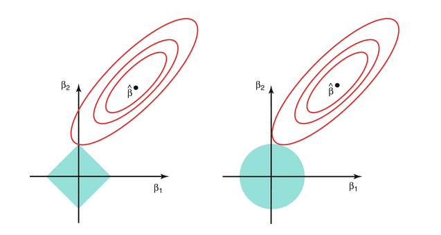
Y obsérvese ahora que la solución de Lasso puede hacer algunos coeficientes igual a 0. Es decir,
En regresión ridge, los coeficientes se encogen gradualmente desde la solución no restringida hasta el origen. Ridge es un método de encogimiento de coeficientes.
En regresión Lasso, los coeficientes se encogen gradualmente, pero también se excluyen variables del modelo. Por eso Lasso es un método de encogimiento y selección de variables.Regresión ridge es especialmente útil cuando tenemos varias variables de entrada fuertemente correlacionadas. Regresión ridge intenta encoger juntos coeficientes de variables correlacionadas para reducir varianza en las predicciones.
Lasso encoge igualmente coeficientes para reducir varianza, pero también comparte similitudes con regresión de mejor subconjunto, en donde para cada número de variables \(l\) buscamos escoger las \(l\) variables que den el mejor modelo. Sin embargo, el enfoque de Lasso es más escalable y puede calcularse de manera más simple.
- Descenso en gradiente no es apropiado para regresión Lasso (ver documentación de glmnet para ver cómo se hace en este paquete). El problema es que los coeficientes nunca se hacen exactamente cero, pues la restricción no es diferenciable en el origen (coeficientes igual a cero).
9.8 Tarea
Consideramos datos para detección de spam en e-mail de spambase.
library(tidyverse)
spam <- read_csv('datos/spam.csv')Las variables de entrada son extraídas de emails (los textos de emails fueron procesados para obtener estas entradas). Son frecuencias de ocurrencia de palabras (por ejemplo, wffree, wfremove, wfmail son frecuencias de las palabras free, remove, mail, etc.), y otras entradas cuentan aparición de ciertos caracteres (cfdollar, cfexc son frecuencias de caracteres signo de dólar y signo de exclamación).
Queremos predecir con estas entradas si un mail es spam o no
table(spam$spam)
#>
#> 0 1
#> 2788 1813Utiliza el método de regresión logística para hacer la estimación.
Construye un modelo solamente usando las variables de caracteres (cfsc, cfpar, etc). Calcula la curva ROC.
Construye un modelo utilizando todas las variables. Calcula la curva ROC.
Haz gráficas de las curvas ROC de los dos modelos anteriores. ¿Qué modelo es superior?
Discute un punto de corte apropiado para hacer un filtro de spam. ¿Escogerías especificidad más alta o sensibilidad más alta? Explica discutiendo los costos de cada tipo de error (falso positivo o falso negativo). Escoge el punto de corte y muestra la matriz de confusión correspondiente.
Repite el ejercicio de spam (con todas las variables), y utiliza regresión logística ridge (glmnet). Escoge un parámetro de regularización y recalcula la matriz de confusión. ¿Obtuviste ganancias en clasificación? Checa los nuevos coeficientes y compara con los que obtuviste usando regresión logística sin regularización.
Nota: para obtener coeficientes estandarizados con glmnet debes estandarizar los datos a mano antes de correr glmnet.